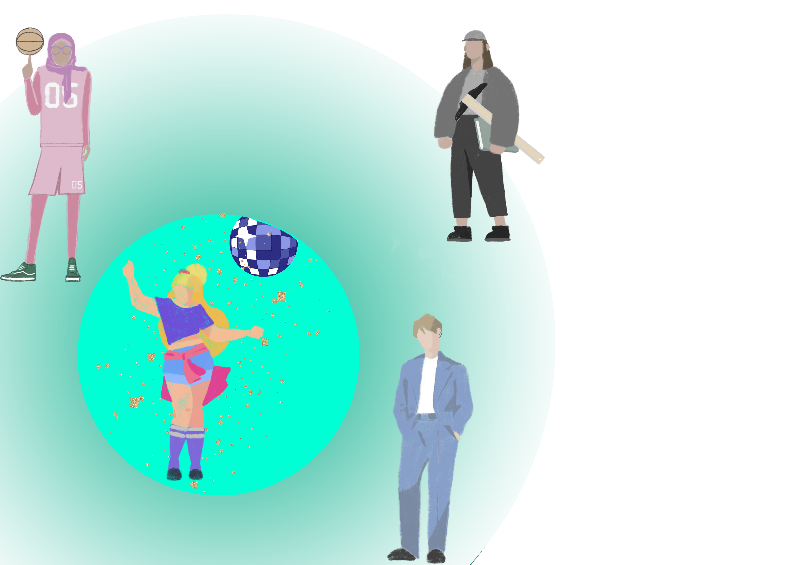
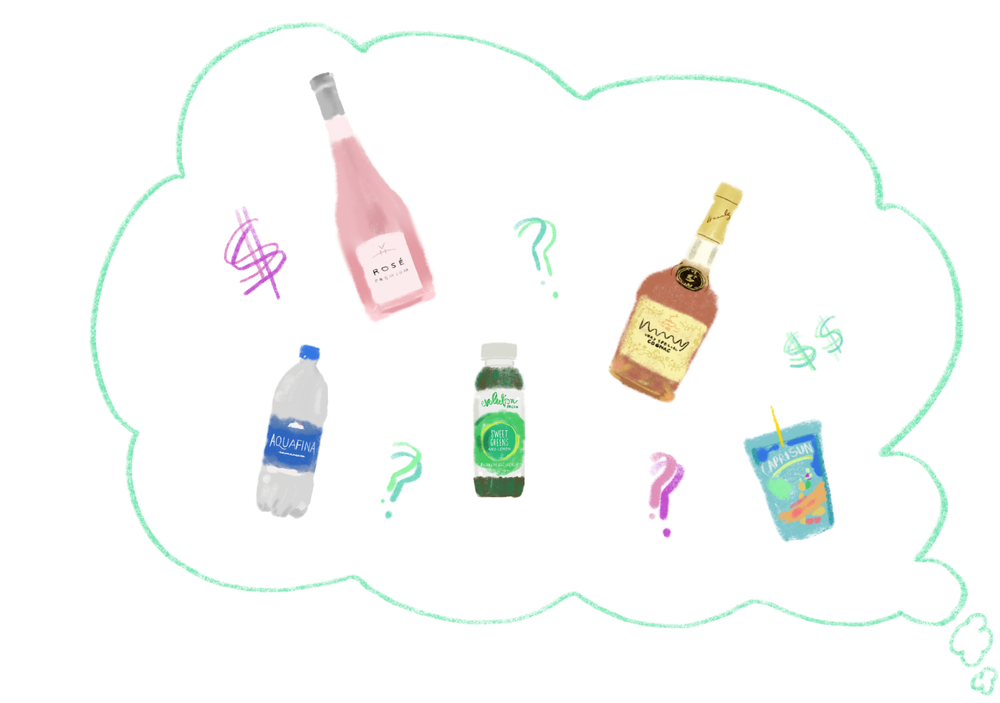

Welcome to the Party: Diversity and Inclusion
Colton Poore

A friend once told me that diversity is inviting everyone to your party, and inclusivity is getting them to
want to come and dance. Easy, right? Invite them, and they’ll come.
But of course, not everyone you invite will come, and not everyone who comes will have a fun time.
Diversity is a fact — you can measure who you invite. But inclusivity is much more of a feeling — how do
you, as the party host, know if everyone is truly having fun?
In a perfect world, you’d invite everyone, they’d all come, and they’d all have a great time — diversity
and inclusivity would be one and the same.
But who’s ever had that happen to them? Either your guests already had an event going on that night,
or something came up last minute, or they’re out of town. There’s no way that everyone’s invited, and
everyone shows up. The feeling of inclusivity is always a subset of diversity. The number of people you
invite will always be greater than the number of people who show up and have fun.
So, imagine you’re planning a party for all the undergrads at Cornell (sorry professors, administrators,
Martha Pollack — we’re already limiting the invite list). Every student, every college, every major.
Invited to one party. On one day. Something even more popular than Slope Day. The makings of a new
Cornell tradition.
First, you’ll want to set a date. What about next Thursday? Well, that just so happens to be the night of
the Orgo Prelim. Archies have studio the next day. English majors have their essays due.
Friday it is then. This way: no homework, no prelims, no class. But some students work the next
morning. Some are leaving for a weekend trip. Some of them have their date night night. And a lot of
students probably just want to veg out.
The reality is that no matter which day and time you choose, some people won’t be able or willing to
make it. Already, the ideal diversity-inclusivity fantasy is over.
But for the sake of necessity, say you settle on Friday at 8 pm.
Now that you have the time and date, you
need to decide what you’ll do at the party. Will you watch a movie (which one?)? Will you dance (what
songs)? Play pong? A drinking game? And on that note, what will you be serving to drink?

Alcohol? A lot of students don’t drink.
Water? It’s Friday — a lot more students want to be drinking.
Soda? Too sugary.
Fruit juice? Too elementary school.
Kale-infused green health smoothie? No thanks.
All of the above? In the right quantities? Good luck.
Once more for the sake of necessity, say you’ll be serving water. After all, everyone can drink water (and
it’s free!). Well, you just lost the sorority sisters who were banking on rosé, the frat bros who don’t want
to be playing water pong, and the health gurus that were hyped about those kale-infused green
smoothies.
Or you cave and buy the alc. Hard liquor. Well, the sorority sisters still don’t see their rosé. And the
other students that don’t drink might not feel very comfortable. Your ability to be inclusive is shrinking
with each decision you make.
And now comes the invite. How do you appeal to everyone? A rager? A kickback? A good old-fashioned
party?
No matter how you market it, someone’s not going to like it. They’re gonna see it, roll their eyes, and
throw it away like they do with most quarter cards. Or maybe it’s a poster that they’ll never look at. Or a
Facebook event that they’ll never check. Or a finely worded, master-crafted email announcement
delivered instantly to their inbox that is just as quickly deleted.
Before you know it, the people who want to come to your party — the ones who feel included — are
vanishing before your eyes.

But let’s spare you, the beleaguered party planner. Let’s say that the invites are sent out, and the day of
the party finally arrives. Let’s say that everyone who marked “Going” all show up. No one cancels at the
last minute. That still doesn’t mean that everyone who shows up will want to dance at your party, or
that they’ll feel comfortable being there at all.
What if someone comes, only to run into that one person
they can’t stand? What if someone comes, and they don’t know anyone? What if someone comes, and
they wish they hadn’t?
And let’s step away from the party analogy for a moment. What if these individual students come to
symbolize something beyond party-goers, and instead become identity groups? And what if it’s no
longer an innocent party, but a serious discussion where identity issues are discussed? How do you plan
this event so that everyone — regardless of who they are or where they come from — feels comfortable
attending and participating? There aren’t any easy answers to these very important questions.
Because what looks good on paper — big ideas like diversity and inclusivity — are hard to make into
realities. It’s hard to have both, and it’s almost impossible to maximize diversity and inclusivity at the
same time. No matter how hard we labor, it might just be that they can’t ever be equal.
Guess party planning isn’t so easy after all.